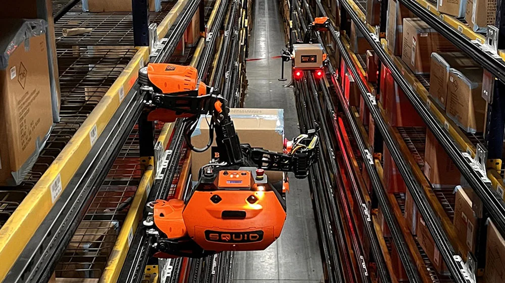

Com uma logística verdadeiramente integrada, sempre há uma nova maneira de manter suas mercadorias em movimento e seus negócios em crescimento.
Soluções
Da fazenda até a sua geladeira, ou da fábrica até seu guarda-roupa, a A.P. Moller–Maersk está sempre desenvolvendo soluções que atendam às necessidades dos nossos clientes, de ponta a ponta na cadeia de suprimento.

Setores de negócio
Independentemente do seu setor de atuação, de suas mercadorias, ou de seus mercados-principais, a Maersk oferece soluções logísticas globais e locais que possibilitam o crescimento de empresa, sejam elas de pequeno ou grande porte.